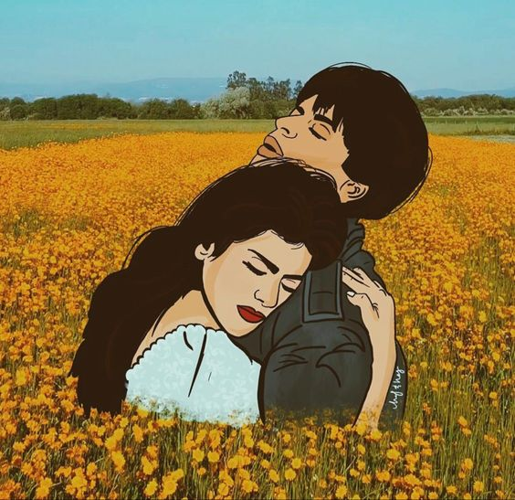
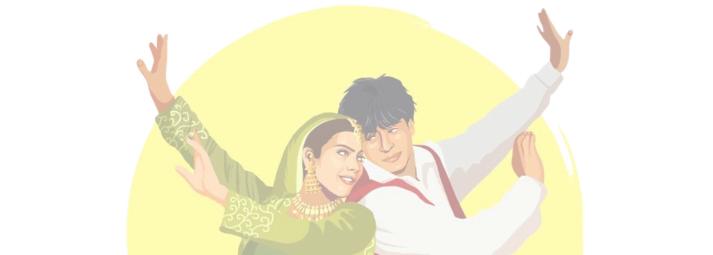

OJUS - Radiance of Euphoria is an intercollegiate festival hosted annually by the students of APSIT. It's an amalgamation of Sports, Literature & Cultural festival comprising of intellectual as well as fun & creative events with a variety of games and entertainment shows. It's not just a festival of various colorful events but a platform where students freely express themselves and our hidden gems come out with their talents
 